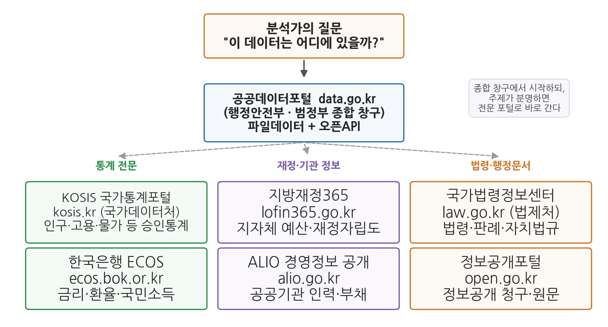
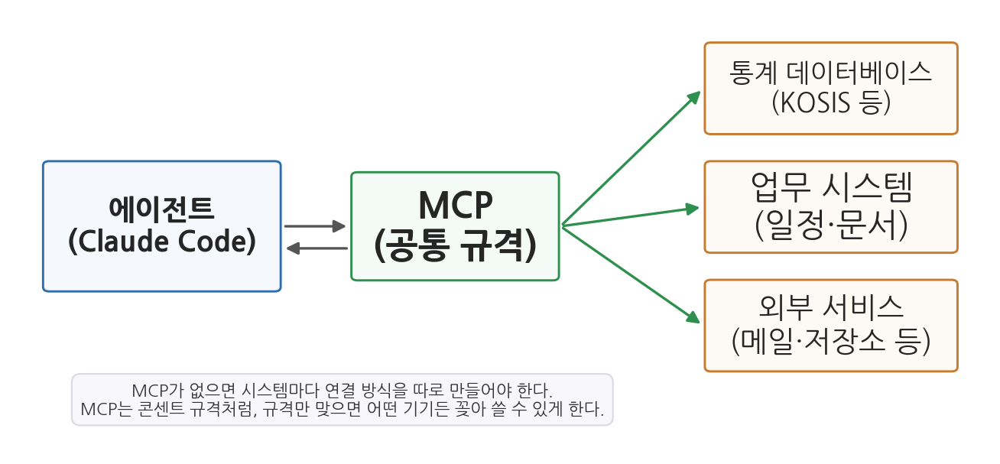

6주차 1회차. 공공데이터 생태계와 MCP
이 법은 공공기관이 보유·관리하는 데이터의 제공 및 그 이용 활성화에 관한 사항을 규정함으로써 국민의 공공데이터에 대한 이용권을 보장하고, 공공데이터의 민간 활용을 통한 삶의 질 향상과 국민경제 발전에 이바지함을 목적으로 한다. (「공공데이터의 제공 및 이용 활성화에 관한 법률」 제1조)
이 장에서 배우는 것
5주차까지 우리는 작업대를 차리고(4주차) 반복 절차를 스킬로 저장하는 법(5주차)까지 익혔다. 이제 필요한 것은 재료, 곧 데이터다.
그런데 막상 재료를 구하러 나서면 두 개의 질문에 연달아 부딪힌다. 첫째, 어디에 있는가. 과장이 "우리 시 재정자립도가 다른 시보다 낮다는데 확인해 줄래요?"라고 했을 때, 그 숫자가 어느 포털에 있는지 아는 것 자체가 분석가의 실력이다. 한국의 공공데이터는 한 곳에 모여 있지 않다. 둘째, 어떻게 가져오는가. 포털에서 클릭해 내려받으면 되지만, "매달 초에 최신 숫자로 갱신해 줄래요?"라는 요청이 붙는 순간 이야기가 달라진다. 사람 손의 클릭은 기록이 남지 않고, 반복하면 반드시 어긋난다.
이 장의 전반부는 첫째 질문의 지도를 그린다. 주요 포털 일곱 곳, 데이터의 형식, 숫자보다 먼저 읽을 메타데이터, 그리고 이용허락이다. 후반부는 둘째 질문의 해법으로 MCP라는 표준을 배운다. 에이전트에게 "KOSIS를 직접 조회하는 도구"를 꽂아 주는 연결 규격으로, 다음 회차 실습에서 주소 한 줄로 등록해 실제 수집에 쓴다.
이 장은 구체적으로 다음을 배운다.
- 정부가 왜 데이터를 공개하는지, 그리고 주요 창구 일곱 곳의 성격
- 데이터를 받기 전에 읽을 것: 형식(CSV·XLSX·JSON), 메타데이터와 코드북, 이용허락
- 클릭 수집의 한계와 자동 수집이 주는 재현성
- MCP가 무엇이고, 에이전트의 손이 닿는 범위를 어떻게 넓히는지
- MCP 서버를 등록하는 법과, 연결 전에 멈춰 생각해야 할 신뢰의 문제
이 장은 데이터를 구하는 사람의 질문 순서를 그대로 따라간다. "어디에 있나(지도) → 받기 전에 무엇을 읽나(형식·메타데이터·이용허락) → 손으로 받으면 무엇이 아쉬운가(재현성) → 에이전트가 직접 가져오게 하려면(MCP) → 아무 서버나 꽂아도 되나(신뢰)"
1.1 공공데이터의 지도를 그린다 → 1.2 받기 전에 읽을 것들을 확인한다 → 1.3 클릭 수집의 한계와 자동 수집의 이유를 정리한다 → 1.4 에이전트에 도구를 꽂는 표준, MCP를 이해한다 → 1.5 MCP 서버의 등록 방법과 신뢰의 원칙을 배운다.
1.1 공공데이터의 지도: 왜 공개되고, 어디에 있는가
개방은 시혜가 아니라 제도다
행정기관은 일하는 것만으로 데이터를 만든다. 주민등록 전출입 신고가 쌓이면 인구이동 데이터가 되고, 예산을 집행하면 재정 데이터가 된다. 이 데이터를 만드는 비용은 모두 세금에서 나왔다. 그렇다면 이 데이터는 기관의 소유물인가, 비용을 댄 국민의 것인가.
한국은 이 질문에 법으로 답해 두었다. 2013년 제정된 「공공데이터의 제공 및 이용 활성화에 관한 법률」(약칭 공공데이터법)이다. 장 첫머리에 인용한 제1조가 말하듯, 이 법은 공공데이터 이용을 국민의 권리(이용권)로 규정한다. 기본원칙 가운데 분석가에게 특히 중요한 것이 셋 있다. 누구나 이용할 수 있고, 일반에 공개된 데이터의 접근을 기관이 임의로 막을 수 없으며, 영리 목적 이용도 원칙적으로 제한받지 않는다는 것이다. 이 제도 덕분에 여러분은 학생 신분 그대로, 이 과목의 모든 분석 재료를 합법적으로 구할 수 있다. 문제는 권리가 아니라 길찾기다.
공공데이터(public data)의 법률상 정의는 "데이터베이스, 전자화된 파일 등 공공기관이 법령 등에서 정하는 목적을 위하여 생성 또는 취득하여 관리하고 있는 광(光) 또는 전자적 방식으로 처리된 자료 또는 정보"다(공공데이터법 제2조). 쉽게 말해 공공기관이 일하면서 만들어 전자적으로 보관 중인 자료 전부가 잠재적 공공데이터다.
일곱 개의 창구
한국의 공공데이터 창구는 여러 곳이다. 처음에는 불편하게 느껴지지만, 각 창구의 성격을 알고 나면 오히려 빠르다. 무엇이든 일단 찾아보는 종합 창구가 하나 있고, 주제가 분명할 때 바로 가는 전문 창구들이 있다.

그림 6-1이 이 장의 핵심 지도다. 맨 위의 질문("이 데이터는 어디에 있을까?")에서 출발해, 가운데의 종합 창구인 공공데이터포털을 먼저 떠올린다. 그러나 질문의 주제가 분명하면 아래 세 묶음, 곧 통계 전문(KOSIS, ECOS), 재정·기관 정보(지방재정365, ALIO), 법령·행정문서(국가법령정보센터, 정보공개포털)로 바로 간다. 이 그림에서 알 수 있는 것은, 포털이 일곱 개나 되는 것이 무질서해서가 아니라 데이터의 성격이 다르기 때문이라는 점이다. 통계는 통계를 만드는 기관이, 재정은 재정을 관리하는 기관이 가장 정확한 원천이다.
표 6-1. 주요 공공데이터 포털 일곱 곳
| 포털 | 주소 | 운영 | 무엇이 있나 | 이런 질문일 때 |
|---|---|---|---|---|
| 공공데이터포털 | data.go.kr | 행정안전부 | 범정부 개방 데이터 (파일, 오픈API) | "일단 있는지부터 찾아보자" |
| KOSIS 국가통계포털 | kosis.kr | 국가데이터처(옛 통계청) | 인구·고용·물가 등 국가승인통계 | "공식 통계 수치가 필요하다" |
| 한국은행 경제통계시스템(ECOS) | ecos.bok.or.kr | 한국은행 | 금리·환율·통화·국민소득·국제수지 | "거시경제 지표가 필요하다" |
| 지방재정365 | lofin365.go.kr | 행정안전부 | 지자체 예산·결산, 재정자립도 등 재정지표 | "우리 시 살림살이를 보고 싶다" |
| ALIO 공공기관 경영정보 공개시스템 | alio.go.kr | 재정경제부(옛 기획재정부) | 공공기관 임직원·보수·부채 등 경영공시 | "공공기관이 궁금하다" |
| 국가법령정보센터 | law.go.kr | 법제처 | 법령·판례·행정규칙·자치법규 | "근거 조문을 확인해야 한다" |
| 정보공개포털 | open.go.kr | 행정안전부 | 정보공개 청구, 공개된 행정문서 | "개방 안 된 자료를 요청하고 싶다" |
몇 곳만 성격을 짚어 두자. 공공데이터포털은 행정안전부가 운영하는 범정부 종합 창구로, 생활어 검색("어린이집", "CCTV")이 잘 통하고, 원하는 데이터가 없으면 제공 신청도 할 수 있다. KOSIS는 국가데이터처(옛 통계청)가 운영하는 통계 전문 포털로, 공공데이터포털이 "기관들이 내놓은 것을 모아 둔 시장"이라면 KOSIS는 "품질 관리를 거친 공식 통계의 서고"에 가깝다. 우리가 2주차부터 써 온 sigungu_2023.csv의 원천 통계(주민등록인구, 합계출산율)도 KOSIS에서 수집한 것이고, 이 장 후반의 MCP 실습 대상도 KOSIS다. 지방재정365는 도입부 과장 질문("우리 시 재정자립도")의 답이 있는 곳으로, 행정학 전공자가 앞으로 가장 자주 드나들 포털 중 하나다. 국가법령정보센터는 숫자 데이터는 아니지만 데이터 열 이름에 등장하는 제도 용어("재정자립도"의 산식, "공공기관"의 범위)가 정의된 곳이라 뜻밖에 자주 쓰이며, 12주차에서 법령 텍스트를 직접 분석 재료로 쓴다.
포털들은 수시로 개편된다. 메뉴 이름이 바뀌고, 주소가 통합되기도 하고, 기관 이름도 바뀐다. 통계청이 국가데이터처로 개편된 것처럼, 표 6-1의 운영 기관명도 언젠가 달라질 수 있다. 그래서 이 장에서 외울 것은 "어느 메뉴를 몇 번 클릭하는가"가 아니라 "이런 성격의 데이터는 이런 성격의 기관이 낸다"는 구조다. 구조를 알면 화면이 바뀌어도 3분 안에 다시 길을 찾는다.
1.2 받기 전에 읽을 것: 형식, 메타데이터, 이용허락
데이터를 담는 그릇: CSV, XLSX, JSON
포털에서 데이터를 받으려는 순간 형식 선택지가 나타난다. 이들은 데이터를 담는 그릇의 차이다.
CSV(comma-separated values)는 가장 단순하고 분석에서 가장 사랑받는 형식이다. 정체는 텍스트 파일로, 첫 줄에 열 이름을 쓰고 그다음 줄부터 한 줄에 한 행씩 값을 쉼표로 구분한다. 우리가 쓰는 sigungu_2023.csv의 실제 첫 두 줄은 이렇다.
시도,시군구,총인구,면적,인구밀도,인구증가율,고령,생산가능,유소년,고령인구비율,합계출산율,출생아수
강원,강릉시,211381.0,1040.82745,201.2235549683,-0.92,51700.0,137876.0,19863.0,24.45820579900748,0.846,826.0
꾸밈이 없으니 어떤 프로그램에서든 오해 없이 읽힌다. XLSX는 엑셀의 저장 형식으로, 사람이 보기 좋게 만든 표에 적합하지만 분석 재료로는 함정이 많다. 제목 행이 병합되어 있거나, 시트가 여러 장이거나, 합계 행이 데이터 사이에 끼어 있는 일이 흔하다(7주차에서 본격적으로 다룬다). JSON(JavaScript object notation)은 {"시도": "강원", "시군구": "강릉시", "총인구": 211381}처럼 이름-값의 쌍을 중괄호로 묶는 텍스트 형식으로, 주로 프로그램끼리 데이터를 주고받을 때 쓴다. 에이전트가 외부 시스템에서 받아 오는 데이터가 대개 이런 모양이므로, 낯을 익혀 두면 로그를 읽을 때 도움이 된다.
표 6-2. 세 가지 형식 비교
| 구분 | CSV | XLSX | JSON |
|---|---|---|---|
| 정체 | 쉼표로 구분한 텍스트 | 엑셀 문서 | 이름-값 쌍의 텍스트 |
| 잘 맞는 곳 | 표 형태 데이터 분석 | 사람이 보는 보고용 표 | 프로그램 간 데이터 교환 |
| 주의할 점 | 인코딩(한글 깨짐) | 병합셀, 다중 시트, 합계 행 | 표로 펴는 변환이 필요 |
숫자보다 먼저 읽을 것: 메타데이터와 코드북
약국에서 약을 받으면 약봉투부터 읽는다. 데이터에도 약봉투가 있다.
메타데이터(metadata)는 데이터 자체가 아니라 데이터에 대한 설명 정보다. 누가 만들었고(생산 기관), 언제 기준이며(기준 시점), 얼마나 자주 갱신되고(갱신 주기), 단위가 무엇인지 등이 담긴다. 포털의 데이터셋 상세 화면에 표 형태로 제시되는 것이 보통이다.
코드북(codebook)은 그중에서도 각 열(변수)의 정의를 적은 문서다. 열 이름이 무슨 뜻인지, 값이 어떤 코드로 적혀 있는지(예: 성별 1=남, 2=여), 어떤 산식으로 계산되었는지를 알려 준다.
왜 숫자보다 먼저인가. 5주차 실습에서 프로파일링한 데이터로 확인해 보자. sigungu_2023.csv의 "고령" 열에서 강릉시의 값은 51,700이다. 이 숫자만으로는 고령의 기준이 65세인지 70세인지 알 수 없다. 원천 통계의 정의를 확인해야 비로소 "65세 이상 인구"라고 말할 수 있다. 정의는 데이터 안에 없다. 코드북에 있다. 메타데이터에서 반드시 확인할 항목을 다섯 가지로 추리면 다음과 같다. ① 생산 기관과 원천(같은 "인구"라도 주민등록 기준과 인구총조사 기준은 값이 다르다), ② 기준 시점, ③ 단위와 산식, ④ 범위(모든 시군구가 있는가, 어디가 빠지지 않았는가), ⑤ 갱신 주기와 이력(과거 값이 소급 수정되기도 하는가). 이 다섯이 어긋난 채 분석하면 코드가 완벽해도 결론이 틀린다.
기준 시점이 중요한 실전 사례를 여러분은 이미 만났다. 5주차 실습의 프로파일링에서 합계출산율이 비어 있던 경북 군위군이다. 군위군은 2023년 7월 1일자로 대구광역시에 편입되었다. 그래서 "2023년 군위군"은 자료의 기준 시점과 작성 기관이 쓴 행정구역 체계에 따라 경북 소속으로도, 대구 소속으로도 나타난다. sigungu_2023.csv에서는 경북으로 분류되어 있다. 서로 다른 시점의 데이터를 합칠 때 이런 개편을 모르면 같은 지역이 두 이름으로 갈라지거나 병합에서 누락된다. 7주차(정제)에서 이 문제를 직접 다룬다.
써도 되는가: 공공누리와 출처 표시
마지막 질문이 남는다. 받은 데이터를 내 보고서에 써도 되는가. 한국 공공기관은 개방 저작물에 공공누리(KOGL, Korea open government license)라는 표준 이용허락 표시를 붙인다. 유형은 네 가지이고, 모든 유형에서 출처 표시는 공통 의무다.
표 6-3. 공공누리 네 가지 유형
| 유형 | 조건 | 상업적 이용 | 변경(2차 저작물) |
|---|---|---|---|
| 제1유형 | 출처표시 | 가능 | 가능 |
| 제2유형 | 출처표시 + 상업적 이용금지 | 불가 | 가능 |
| 제3유형 | 출처표시 + 변경금지 | 가능 | 불가 |
| 제4유형 | 출처표시 + 상업적 이용금지 + 변경금지 | 불가 | 불가 |
다행히 분석용 데이터셋은 제1유형이 많고, 수업 과제는 상업적 이용이 아니므로 학생 입장에서 큰 제약은 드물다. 다만 출처 표시는 예외가 없다. 보고서 끝에 "자료: 행정안전부 주민등록인구통계(2023), KOSIS에서 수집" 같은 형태로 원천 기관, 자료명, 시점, 수집 경로를 적는 습관을 이번 주부터 들인다. 출처 표시는 의무이기 이전에 자기 방어다. 숫자가 도전받았을 때 근거를 즉시 댈 수 있고, 몇 달 뒤의 나(혹은 후임자)가 같은 분석을 재현할 수 있다. 덧붙여 개방 데이터라도 스스로 점검할 것이 있다. 작은 지역과 드문 특성의 조합은 사실상 개인을 가리킬 수 있고(14주차 윤리에서 다룬다), 공개된 데이터가 곧 정확한 데이터는 아니므로 검증을 건너뛸 이유가 되지 않으며, 내려받은 원본은 그대로 보존하고 가공은 사본으로 한다(4주차 폴더 구조의 이유다).
1.3 클릭 수집의 한계: 자동 수집과 재현성
셋째 달의 실수
도입부의 "매달 초 갱신" 요청을 따라가 보자. 첫 달은 할 만하다. 포털에 접속해 통계표를 찾고, 조회 조건을 맞추고, 내려받아 보고서에 옮긴다. 둘째 달에는 슬슬 헷갈린다. 지난달에 조건을 어떻게 맞췄더라. 셋째 달에는 실수가 나온다. 연령 기준을 지난달과 다르게 선택해서, 두 달의 숫자가 서로 비교할 수 없는 것이 되어 버렸다. 문제는 성실성이 아니다. 손으로 하는 클릭은 어디에도 기록이 남지 않기 때문에, 반복하면 반드시 어긋난다.
받은 파일에도 한계가 있다. 파일은 내려받은 순간의 스냅사진이다. 그런데 공공데이터는 살아 있다. 잠정치가 확정치로 바뀌고, 새 시점 자료가 덧붙고, 오류가 정정된다. 갱신이 필요할 때마다 "그 고생을 처음부터 다시" 해야 한다면, 분석은 반복 가능한 절차가 아니라 매번의 수공예가 된다.
그래서 반복되거나, 갱신되거나, 근거를 남겨야 하는 수집은 자동화한다. 프로그램의 세계에는 이를 위한 문이 오래전부터 나 있었다. 오픈API다.
API(application programming interface)는 한 프로그램이 다른 프로그램의 기능이나 데이터를 사용할 수 있도록 정해 놓은 요청·응답의 규약이다. 웹페이지가 사람용 문이라면 API는 프로그램용 문으로, 화면 장식 없이 데이터만 약속된 형식으로 오간다. 오픈API(open API)는 그 규약을 누구나(대개 등록 절차를 거쳐) 쓸 수 있게 공개한 것이다. KOSIS와 공공데이터포털도 오픈API를 제공한다.
전통적인 방법은 이 API를 호출하는 수집 코드를 짜는 것이었다. 인증키를 발급받고, API 문서를 읽고, 요청 주소와 파라미터를 조립하는 방식이다. 조회 조건이 코드에 글자로 남으므로 재현성 문제는 해결되지만, 대신 준비물이 많다. 키 발급과 관리, 문서 해독, 코드 작성과 디버깅이 모두 필요하다. 에이전트가 코드를 대신 짜 주는 시대에도 이 우회로 자체는 남아 있었다. 그런데 최근, 에이전트 시대에 맞는 더 곧은 길이 하나 열렸다. 다음 절의 MCP다.
재현성(reproducibility)은 같은 절차로 같은 결과를 다시 만들 수 있는 성질이다. 공공기관의 분석 결과는 예산과 정책의 근거가 되고, 감사와 정보공개청구의 대상이 된다. "작년 보고서의 이 숫자는 어떤 조건으로 뽑은 것인가"에 답하지 못하면 숫자의 신뢰가 무너진다. 담당자가 바뀌어도 분석이 이어져야 한다는 점도 중요하다. 수집 절차가 기록으로 남아 있으면 후임자는 실행만 하면 되지만, 전임자의 손과 기억에만 있었다면 처음부터 다시 시작해야 한다. 재현성은 학술적 미덕이기 이전에 행정의 연속성 문제다.
원하는 데이터에 정식 창구가 없을 때 사람용 웹 화면을 프로그램으로 자동 수집하는 방법을 크롤링(crawling)이라 부른다. 크롤링이 곧 불법은 아니지만, 제공자가 예정하지 않은 통로인 만큼 경계가 있다. 사이트 이용약관, 자동 수집 방침을 밝힌 robots.txt, 게시글의 저작권과 개인정보, 그리고 상대 서버의 부하다. 이 과목의 원칙은 명료하다. 정식 창구(API, MCP)가 있으면 그것을 쓰고, 크롤링은 차선책으로만, 경계를 확인하고 쓴다. 에이전트는 시키면 크롤링 코드를 척척 짜 주지만, 코드를 짤 수 있다는 것과 그래도 된다는 것은 다른 문제이며 그 판단은 지시하는 사람의 책임이다. 11주차에서 공개 텍스트 자료를 다룰 때 이 감각이 다시 필요해진다.
1.4 MCP: 에이전트에 도구를 꽂는 표준
지금까지 에이전트의 손이 닿는 범위
2주차에서 배웠듯, 에이전트가 도구로 다룰 수 있었던 세계는 크게 둘이었다. 내 노트북 안의 파일과 터미널, 그리고 웹 검색이다. 그런데 실무의 데이터는 파일과 웹페이지에만 있지 않다. 통계 데이터베이스에, 부서의 업무 시스템에, 문서 관리 시스템에 들어 있다. 에이전트가 그런 외부 시스템과 직접 대화하려면, 시스템마다 연결 통로를 하나하나 새로 만들어야 할까.
이 문제를 풀기 위해 만들어진 것이 MCP(Model Context Protocol)라는 개방형 표준이다. 비유하자면 콘센트 규격이다. 나라마다 플러그 모양이 다르면 기기마다 어댑터를 따로 사야 하지만, 규격이 통일되어 있으면 어떤 기기든 꽂으면 그만이다. MCP는 "에이전트가 외부 도구·데이터와 연결될 때는 이 규격을 따르자"는 약속이고, 이 규격을 따르는 연결 통로를 MCP 서버(server)라고 부른다.

그림 6-2를 읽어 보자. 왼쪽의 에이전트(Claude Code)는 가운데의 MCP라는 공통 규격을 통해 오른쪽의 다양한 외부 시스템(통계 데이터베이스, 업무 시스템, 외부 서비스)과 연결된다. 여기서 알 수 있는 것은, 에이전트 입장에서 오른쪽에 무엇이 꽂히든 대화 방식이 같다는 점이다. 규격이 하나이므로, 세상 사람들이 만들어 둔 수백 가지 MCP 서버를 골라 꽂기만 하면 에이전트의 손이 닿는 범위가 그만큼 넓어진다.
MCP(Model Context Protocol)는 AI 에이전트를 외부 도구·데이터베이스·서비스와 연결하기 위한 개방형 표준이다. 이 표준을 따르는 연결 통로인 MCP 서버를 추가하면, 그 서버가 제공하는 기능들이 에이전트에게 새 도구로 주어져, 에이전트가 해당 시스템의 정보를 직접 읽고 조작할 수 있게 된다. Claude Code에서는 명령 한 줄로 서버를 추가하고, 대화 중
/mcp 명령으로 연결 상태를 확인할 수 있다.
API와 무엇이 다른가: 문서를 주는 대신 도구를 꽂는다
1.3절의 API와 헷갈리기 쉬우니 정리해 두자. API는 "프로그램과 프로그램이 데이터를 주고받는 약속"이라는 넓은 개념이고, MCP는 그중에서도 "AI 에이전트와 외부 도구 사이"에 특화된 표준이다. 오픈API 방식에서 에이전트는 API 문서를 읽고 요청 코드를 짜서 실행하는 우회로를 거친다. MCP 방식에서는 연결된 시스템이 에이전트에게 처음부터 도구로 주어진다. 2주차에서 본 파일 읽기, 터미널 실행 같은 기본 도구 옆에 "통계 검색", "통계값 조회" 같은 도구가 나란히 추가되는 것이다. 에이전트는 파일을 읽듯 자연스럽게, 인증키 관리나 파라미터 조립 없이 외부 시스템을 다룬다.
실제로 많은 MCP 서버는 내부적으로 기존 오픈API를 호출한다. 다음 회차에 쓸 kosis MCP 서버도 뒤에서는 KOSIS의 데이터에 접속한다. 달라진 것은 데이터가 아니라 만나는 방식이다. API가 "메뉴판(문서)을 읽고 정해진 양식으로 주문서를 쓰는 문"이라면, MCP는 "에이전트 손에 바로 쥐여 주는 리모컨"에 가깝다.
1.5 MCP 서버의 등록과 신뢰: 주소 한 줄, 확인은 사람
등록은 명령 한 줄이다
MCP 서버를 쓰는 데 필요한 것은 서버의 주소와 이름표뿐이다. 인터넷에서 접속하는 원격 MCP 서버는 터미널에서 명령 한 줄로 등록한다. 다음은 다음 회차 실습에서 실제로 쓸 명령이다.
claude mcp add --transport http kosis https://kosismcp2026.vercel.app/api/mcp
읽는 법은 이렇다. claude mcp add가 "MCP 서버를 추가하라"는 명령이고, --transport http는 인터넷 주소로 접속하는 원격 서버라는 뜻이며, kosis는 내가 붙이는 서버의 별명, 마지막이 서버 제공자가 알려 준 주소다. 이 서버는 인증키도 회원가입도 요구하지 않으므로 주소만으로 등록이 끝난다. 등록 후 대화창에서 /mcp를 입력하면 연결 상태와 이 서버가 제공하는 도구 목록을 확인할 수 있다. 기본 등록은 현재 프로젝트에서 나만 쓰는 범위이며, 팀과 공유하거나(프로젝트 범위) 내 모든 프로젝트에서 쓰는(사용자 범위) 옵션도 있다는 것 정도만 알아 두면 된다.
kosis MCP 서버는 국가통계포털(KOSIS)의 통계를 검색하고 조회하는 도구들을 에이전트에게 더해 주는 시범서비스다. 등록하고 나면 에이전트에게 "KOSIS에서 시도별 인구를 찾아 줘"라고 말하는 것만으로, 에이전트가 통계표를 검색하고 수치를 받아 오는 장면을 보게 된다. 5주차에 배운 스킬이 "절차"를 에이전트에게 더해 주었다면, MCP는 "손발"을 더해 준다.
아무 콘센트에나 꽂지 않는다
등록이 쉽다는 것은 양날의 검이다. MCP 서버를 연결하는 일은 에이전트에게 새 손발을 달아 주는 일이므로, 신뢰할 수 있는 서버만 연결해야 한다.
공식 문서는 서버를 연결하기 전에 그 서버를 신뢰할 수 있는지 확인하라고 경고한다. 검증되지 않은 서버는 잘못된 데이터를 주거나, 외부에서 가져온 내용 속에 숨은 지시문으로 에이전트를 조종하려는 공격(프롬프트 주입)의 통로가 될 수 있다. 연결 전에 세 가지를 점검한다. ① 누가 운영하는 서버인가(운영 주체가 확인되는가). ② 무엇을 할 수 있는 서버인가(읽기만 하는가, 쓰기·삭제도 하는가). ③ 꼭 필요한가(안 쓰는 서버는 등록해 두지 않는다). 2주차의 권한 승인에서 기른 습관, 곧 "에이전트에게 새 능력을 줄 때는 한 번 멈춰 생각한다"가 여기서도 그대로 적용된다.
이 경계 감각은 MCP가 가져온 새 힘의 크기에 비례한다. 읽기 전용 통계 조회 서버는 위험이 작지만, 메일을 보내거나 파일을 지울 수 있는 서버라면 이야기가 다르다. 서버가 하는 일의 범위를 알고 꽂는 것, 그것이 콘센트 규격 시대의 안전 수칙이다.
요약
공공데이터 개방은 선의가 아니라 제도다. 공공데이터법은 공공데이터 이용을 국민의 권리로 규정하며, 영리 이용까지 원칙적으로 허용한다. 한국 공공데이터의 지도는 종합 창구인 공공데이터포털을 중심에 두고 통계(KOSIS, ECOS), 재정·기관(지방재정365, ALIO), 법령·행정문서(국가법령정보센터, 정보공개포털)의 전문 창구들로 이루어진다. 데이터를 받기 전에는 형식(CSV·XLSX·JSON)을 구분하고, 메타데이터와 코드북에서 생산 기관·기준 시점·단위·범위·갱신 주기를 확인하며(군위군의 대구 편입처럼 행정구역 개편이 대표적 이유다), 이용허락(공공누리)과 출처 표시 의무를 지킨다. 손으로 하는 클릭 수집은 기록이 남지 않아 반복하면 어긋나고 갱신에 취약하므로, 반복·갱신·근거가 필요한 수집은 자동화한다. 오픈API가 프로그램용 문이라면, MCP는 에이전트와 외부 도구를 잇는 개방형 표준으로, MCP 서버를 등록하면 외부 시스템의 기능이 에이전트에게 도구로 주어진다. Claude Code에서는 claude mcp add 명령 한 줄로 서버를 등록하고 /mcp로 확인하되, 서버 연결은 에이전트에게 새 손발을 달아 주는 일이므로 운영 주체와 기능 범위를 확인한 신뢰할 수 있는 서버만 꽂는다.
연습문제
6-1. 포털 골라 가기. 다음 질문 각각에 대해, 표 6-1의 일곱 포털 중 가장 먼저 가 볼 곳을 하나씩 고르고 이유를 한 문장으로 써 보라. (a) 우리 시의 최근 5년 재정자립도 추이를 보고 싶다. (b) 전국 시군구별 어린이집 목록 데이터가 개방되어 있는지 궁금하다. (c) "지방자치단체 출산지원금"의 법적 근거 조례를 확인하고 싶다. (d) 한국의 기준금리가 지난 10년간 어떻게 변했는지 시계열이 필요하다. (e) 우리 구청이 작년에 수의계약을 몇 건 했는지 자료가 어디에도 없어서 직접 요청하고 싶다.
6-2. 메타데이터 없는 숫자. 어느 데이터셋에 "노인 인구: 51,700"이라는 값이 있다고 하자. 이 숫자를 보고서에 쓰기 전에 메타데이터·코드북에서 확인해야 할 것을 1.2절의 다섯 항목에 따라 질문 형태로 다섯 개 써 보라. (예: "여기서 노인의 기준 연령은 몇 세인가?")
6-3. 수집 방법 고르기. 다음 세 상황에서 파일 다운로드와 MCP(또는 API) 자동 수집 중 무엇이 적절한지 고르고, 1.3절의 세 기준(반복되는가, 갱신되는가, 근거를 남겨야 하는가)으로 이유를 써 보라. (a) 기말 과제에 한 번 쓸 시군구 재정자립도 표 한 장이 필요하다. 지방재정365에서 엑셀로 받을 수 있다. (b) 과에서 매달 초 최신 인구 통계로 현황판을 갱신해야 한다. (c) 정책 보고서에 실을 통계여서, 감사 때 "이 숫자를 어떻게 얻었는지" 답할 수 있어야 한다.
6-4. 콘센트의 신뢰. 어느 블로그에서 "업무가 10배 빨라지는 MCP 서버 주소 모음"을 발견했다. 출처가 불분명한 이 서버들을 바로 등록하면 안 되는 이유를 1.5절의 점검 항목 세 가지로 설명하고, 등록 전에 무엇을 확인할지 써 보라.